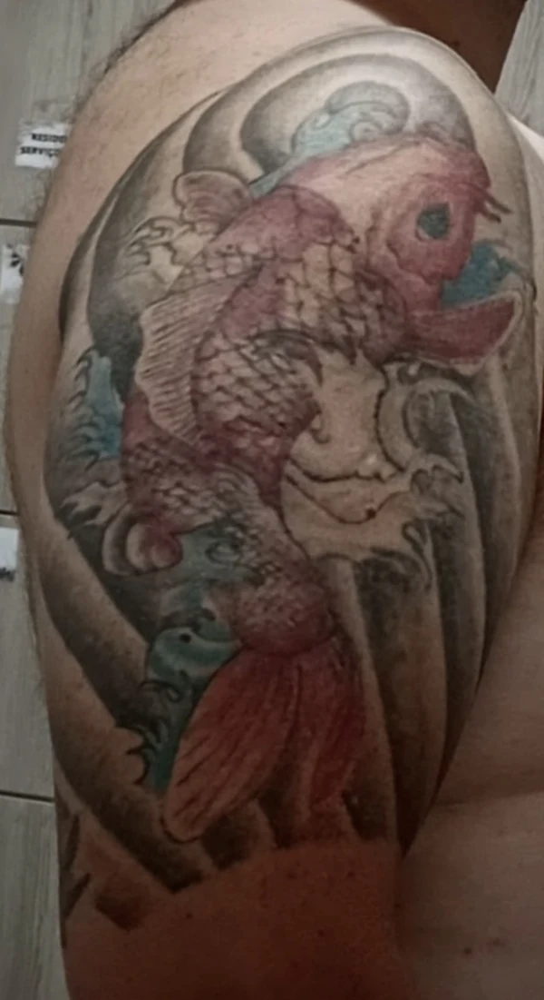
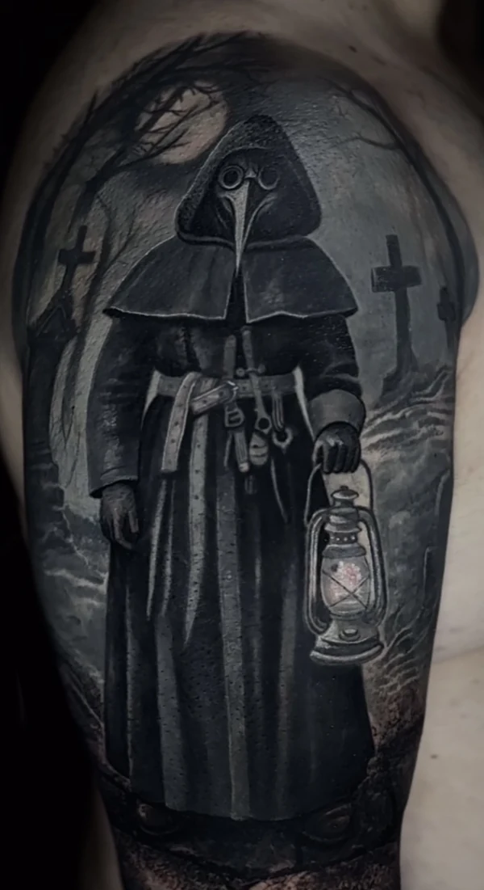
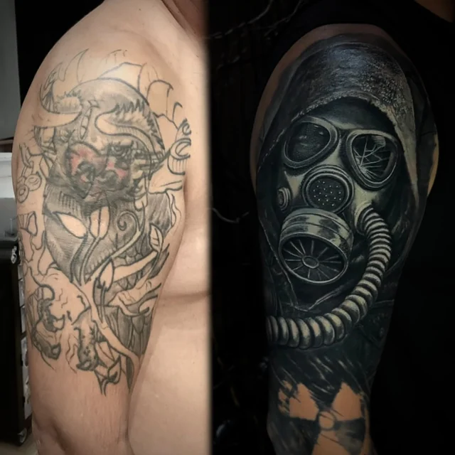
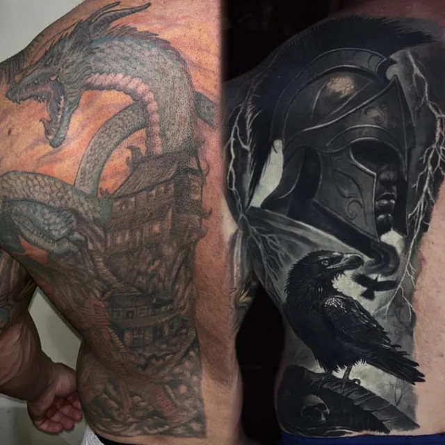
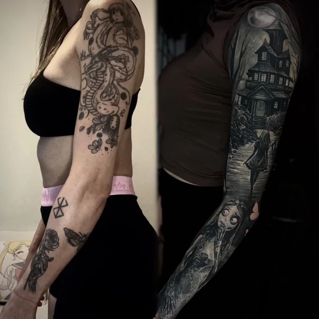
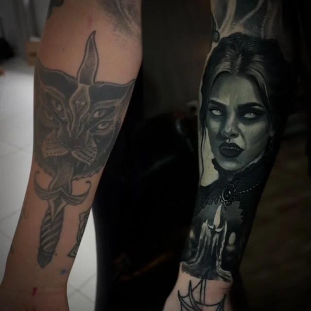
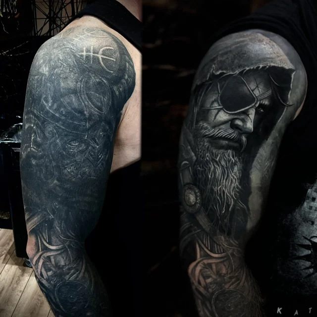
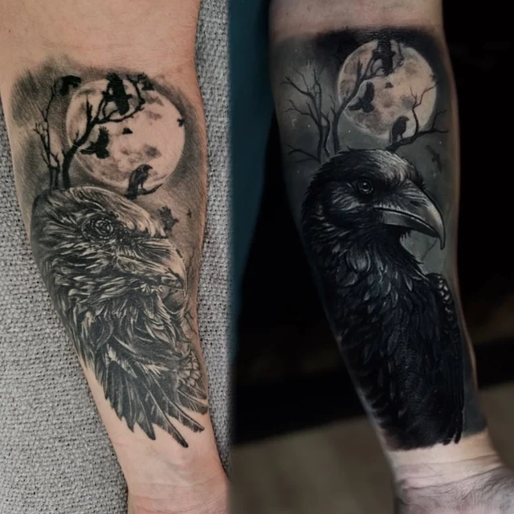

A arte de transformar
Coberturas | Cover-up
“Meu objetivo não é apenas cobrir o que ficou para trás, mas criar algo que você tenha orgulho de carregar daqui para frente.”
Uma cobertura vai muito além de esconder uma tatuagem antiga. É um processo de transformação que exige experiência, planejamento e conhecimento técnico.
Cada projeto é avaliado individualmente, considerando a pigmentação existente, as características da pele e as possibilidades reais de cobertura.
Através de técnicas de contraste, profundidade e composição, busco transformar o antigo em uma nova arte, com harmonia, identidade e durabilidade.
Mandar foto da tattoo antiga

Como funciona
Da tattoo antiga à nova arte
- 1
Avaliação
Você manda fotos da tatuagem antiga, com boa luz, e as medidas aproximadas. Cada caso é avaliado pela pigmentação, pela pele e pelo que é possível cobrir de verdade.
- 2
Projeto
A nova arte é desenhada em cima da antiga, usando contraste, profundidade e composição para que ela desapareça dentro do desenho novo.
- 3
Primeira sessão
Cria a base e neutraliza o trabalho antigo.
- 4
Cicatrização e reforço
Depois de cicatrizar, uma nova camada reforça a cobertura, constrói contraste e volume e fecha os detalhes.
Antes e depois
Coberturas feitas pelo Zapa
Toque numa foto para ver em tela cheia.

Máscara de gás sobre desenho antigo no ombro

Espartano e corvo sobre dragão colorido nas costas

Noiva Cadáver e casa assombrada sobre braço de anime

Vampira com vela sobre gato no antebraço

Viking de tapa-olho sobre braço fechado escuro

Corvo sob a lua sobre corvo antigo sem contraste
Tem uma tattoo que não te representa mais?
Mande fotos da tatuagem antiga e as medidas aproximadas. A avaliação começa pela conversa.